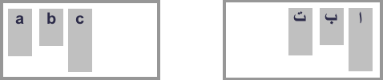

The CSS Box Alignment module specifies CSS features that relate to the alignment of boxes in the various CSS box layout models: block layout, table layout, flex layout, and grid layout. The module aims to create a consistent method of alignment across all of CSS. This document details the general concepts found in the specification.
Note: The documentation for each layout method will detail how Box Alignment is applied there.
CSS traditionally had very limited alignment capabilities. We were able to align text using {{cssxref("text-align")}}, center blocks using auto {{cssxref("margin")}}s, and in table or inline-block layouts using the {{cssxref("vertical-align")}} property. Alignment of text is now covered by the Inline Layout and CSS Text modules, and for the first time in Box Alignment we have full horizontal and vertical alignment capabilities.
If you initially learned Flexbox then you may consider these properties to be part of the Flexbox specification, and some of the properties are indeed listed in Level 1 of Flexbox. However the specification notes that the Box Alignment specification should be referred to as it may add additional capabilities over what is currently in Flexbox.
The following examples demonstrate how some of the Box Alignment Properties are applied in Grid and Flexbox.
In this example using Grid Layout, there is extra space in the grid container after laying out the fixed width tracks on the inline (main) axis. This space is distributed using {{cssxref("justify-content")}}. On the block (cross) axis the alignment of the items inside their grid areas is controlled with {{cssxref("align-items")}}. The first item overrides the align-items value set on the group by setting {{cssxref("align-self")}} to center.
{{EmbedGHLiveSample("css-examples/box-alignment/overview/grid-align-items.html", '100%', 500)}}
In this example, three flex items are aligned on the main axis using justify-content and on the Cross Axis using align-items. The first item overrides the align-items set on the group by setting align-self to center.
{{EmbedGHLiveSample("css-examples/box-alignment/overview/flex-align-items.html", '100%', 500)}}
The specification details some alignment terminology to make it easier to discuss these alignment properties outside of their implementation within a particular layout method. There are also some key concepts which are common to all layout methods.
Alignment is linked to writing modes in that when we align an item we do not consider whether we are aligning it to the physical dimensions of top, right, bottom and left. Instead we describe alignment in terms of the start and end of the particular dimension we are working with. This ensures that alignment works in the same way whichever writing mode the document has.
When using the box alignment properties you will align content on one of two axes — the inline (or main) axis, and the block (or cross) axis. The inline axis is the axis along which words in a sentence flow in the writing mode being used — for English, for example, the inline axis is horizontal. The block axis is the axis along which blocks, such as paragraph elements, are laid out and it runs across the Inline axis.
When aligning items on the inline axis you will use the properties which begin with justify-:
When aligning items on the block axis you will use the properties that begin align-:
Flexbox adds an additional complication in that the above is true when {{cssxref("flex-direction")}} is set to row. The properties are swapped when flexbox is set to column. Therefore, when working with flexbox it is easier to think about the main and cross axis rather than inline and block. The justify- properties are always used to align on the main axis, the align- properties on the cross axis.
The alignment subject is the thing that is being aligned. For justify-self or align-self, or when setting these values as a group with justify-items or align-items, this will be the margin box of the element that this property is being used on. The justify-content and align-content properties differ per layout method.
The alignment container is the box the subject is being aligned inside. This will typically be the alignment subject’s containing block. An alignment container may contain one or many alignment subjects.
The below image shows an alignment container with two alignment subjects inside.

If you set an alignment that cannot be fulfilled, then the fallback alignment will come into play and deal with the available space. This fallback alignment is specified individually for each layout method and detailed on the page for that method.
There are three different types of alignment that the specification details; these use keyword values.
The following values are defined for positional alignment, and can be used as values for content alignment with justify-content and align-content and also for self alignment with justify-self and align-self.
centerstartendself-startself-endflex-start for Flexbox onlyflex-end for Flexbox onlyleftrightOther than the physical values of left and right, which relate to physical attributes of the screen, all of the other values are logical values and relate to the writing mode of the content.
For example, when working in CSS Grid Layout, if you are working in English and set justify-content to start this will move the items in the inline dimension to the start, which will be the left as sentences in English start on the left. If you were using Arabic, a right to left language, then the same value of start would result in the items moving to the right, as sentences in Arabic start on the right-hand side of the page.
Both of these examples have justify-content: start, however the location of start changes according to the writing mode.

The Baseline alignment keywords are used to align the baselines of boxes across a group of alignment subjects. They can be used as values for content alignment with justify-content and align-content and also for self alignment with justify-self and align-self.
baselinefirst baselinelast baselineBaseline content alignment — specifying a baseline alignment value for justify-content or align-content — works in layout methods that lay items out in rows. The alignment subjects are baseline aligned against each other by adding padding inside the boxes.
Baseline self alignment shifts the boxes to align by baseline by adding a margin outside the boxes. Self alignment is when using justify-self or align-self, or when setting these values as a group with justify-items and align-items.
The distributed alignment keywords are used with the align-content and justify-content properties. These keywords define what happens to any additional space after alignment subjects have been displayed. The values are as follows:
stretchspace-betweenspace-aroundspace-evenlyFor example, in Flex Layout items are aligned with flex-start initially. Working in a horizontal top to bottom writing mode such as English, with flex-direction as row the items start on the far left and any available space after displaying the items is placed after the items.

If you set justify-content: space-between on the flex container, the available space is now shared out and placed between the items.

There needs to be space available in the dimension you wish to align the items in, in order for these keywords to take effect. With no space, there is nothing to distribute.
The safe and unsafe keywords help define behavior when an alignment subject is larger than the alignment container. The safe keyword will align to start in the case of a specified alignment causing an overflow, the aim being to avoid “data loss” where part of the item is outside of the boundaries of the alignment container and can’t be scrolled to.
If you specify unsafe then the alignment will be honoured even if it would cause such data loss.
The box alignment specification also includes the gap, row-gap, and column-gap properties. These properties enable the setting of a consistent gap between items in a row or column, in any layout method which has items arranged in this way.
The gap property is a shorthand for row-gap and column-gap, which allows us to set these properties at once:
In the below example, a grid layout uses the gap shorthand to set a 10px gap between row tracks, and a 2em gap between column tracks.
{{EmbedGHLiveSample("css-examples/box-alignment/overview/grid-gap.html", '100%', 500)}}
In this example I am using the {{cssxref("gap")}} property in addition to {{cssxref("gap")}}. The gap properties were originally prefixed with grid- in the Grid Layout specification and some browsers only support these prefixed versions.
The prefixed versions will be maintained as an alias of the unprefixed ones, however you can always double up in the way that you would with vendor prefixes, adding the grid-gap property and then the gap property with the same values.
Also, be aware that other things may increase the visual gap displayed, for example using the space distribution keywords or adding margins to items.
As the CSS box alignment properties are implemented differently depending on the specification they interact with, refer to the following pages for each layout type for details of how to use the alignment properties with it: